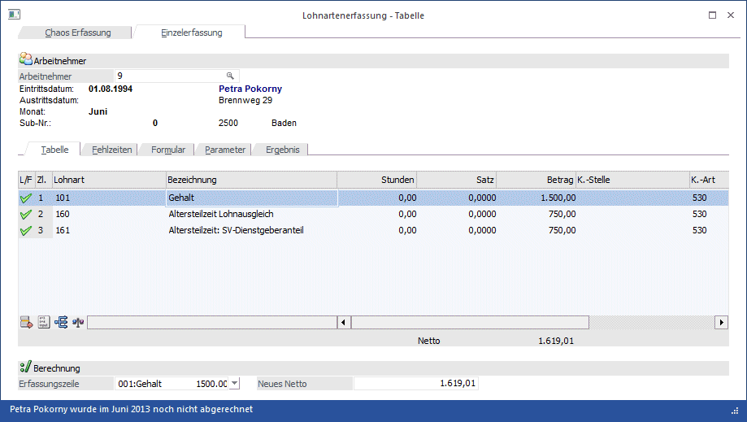
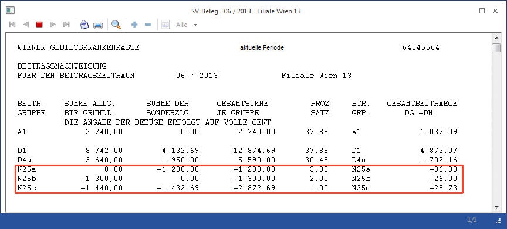
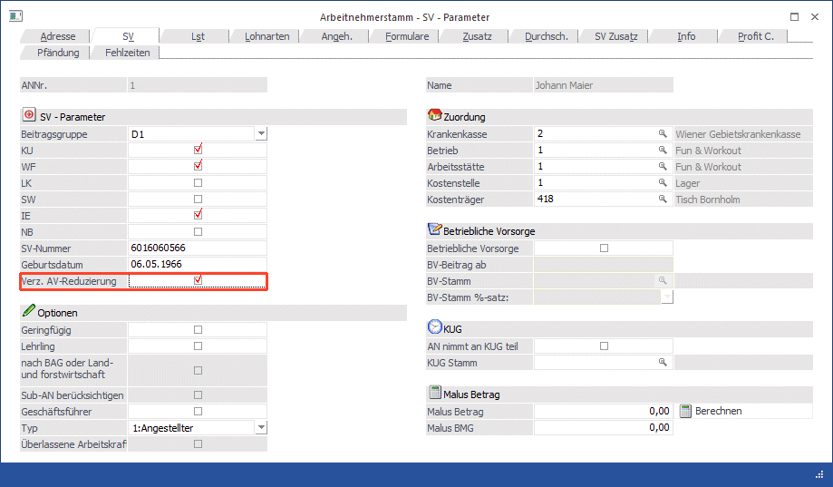
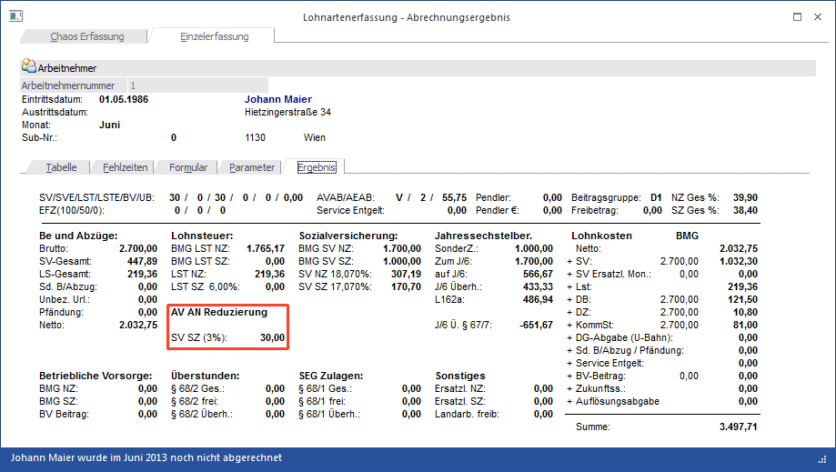

Seit 1. Juli 2008 kommt es für Bezieher geringer Einkommen zu einer Verminderung bzw. zu einem Entfall des Arbeitslosenversicherungsbeitrags des vom Arbeitnehmer zu tragenden Anteils. In dieser Ausgabe der LOHN - News möchten wir Ihnen einen Überblick über die Neuerungen und die dadurch aufgetretenen Fragen geben.
Wann wird der AV-Beitrag reduziert bzw. wann entfällt der AV-Beitrag für den DN?
Die Höhe der Reduzierung des AV-Beitrags richtet sich nach der SV-Bemessungsgrundlage. Dabei gilt folgende Staffelung:
|
BMG 2012 |
BMG 2013 |
BMG 2014 |
Reduzierung |
|
bis € 1.186,- |
bis € 1.219,- |
bis € 1.246,- |
-3 % |
|
von € 1.168,01 bis 1.294,- |
von € 1.219,01 bis € 1.330,- |
von € 1.246,01 bis € 1.359,- |
-2 % |
|
von € 1.294,01 bis 1.456,- |
von € 1.330,01 bis € 1.497,- |
von € 1.359,01 bis € 1.530,- |
-1 % |
All jene Arbeitnehmer deren SV-Bemessungsgrundlage über € 1.530,- (für 2014) liegt, müssen weiterhin den Dienstnehmeranteil zum AV-Beitrag in Höhe von 3% tragen.
Hinweis:
Die Werte der 3 Stufen werden jährlich angepasst.
Wie wird die AV -Reduzierung in der WinLine gehandhabt?
Die AV-Reduzierung wird in der WinLine für alle Arbeitnehmer, deren Beitragsgruppe AV pflichtig ist, automatisch bei der Abrechnung ermittelt. Im Abrechnungsergebnis können Sie sehen, in welcher Höhe die AV-Reduzierung berücksichtigt wurde.

Am Beitragsgrundlagennachweis scheint die AV Reduzierung in einer eigenen Verrechnungsgruppe auf. Je nachdem um welchen Prozentsatz der AV Beitrag reduziert wurde, gibt es eine eigene Verrechnungsgruppe:
|
Prozentsatz |
Verrechnungsgruppe |
|
3 % |
N25a |
|
2 % |
N25b |
|
1 % |
N25c |

Wann muss die Checkbox "Verzicht auf AV Beitragsreduzierung" aktiviert werden?
Im Arbeitnehmerstamm gibt es im Register SV eine Checkbox "Verzicht auf AV Beitragsreduzierung

Diese Checkbox muss nur dann gesetzt werden, wenn mit Sub-Arbeitnehmern gearbeitet wird und zwar auch nur dann, wenn innerhalb einer Abrechnungsperiode ein Arbeitnehmer mit mehreren Sub-Arbeitnehmern abgerechnet wird. Der Grund ist, dass die AV-Reduzierung nicht pro Abrechnung sondern per Periode berücksichtigt werden darf.
Beispiel:
Ein AN wird mit zwei Sub-Nummern geführt (1-001 und 1- 002). Dieser AN wird in der Abrechnungsperiode 10 mit beiden Sub-Nummern abgerechnet und daraus ergibt sich bei der Sub-Nummer 001 eine SV-Bemessungsgrundlage von € 600,- und bei der Sub-Nummer 002 eine SV-Bemessungsgrundlage von € 1.100,-. Beide Abrechnungen im Einzelnen betrachtet, würden unter die AV-Reduzierung fallen was in diesem Fall nicht zulässig wäre, da die gesamte Abrechnungsperiode betrachtet werden muss. Zählt man nämlich die beiden Beträge zusammen, ergibt sich daraus eine BMG von insgesamt € 1.700,- und liegt somit deutlich über der Reduzierungsgrenze von € 1.497,-. Es muss daher beim Sub-Arbeitnehmer mit der Nummer 1-001 die Checkbox "Verzicht auf AV Beitragsreduzierung" gesetzt werden. Dann wird beim Abrechnen dieser Sub-Nummer die AV-Reduzierung vorerst nicht berücksichtigt, sondern erst bei der Abrechnung des Sub-Arbeitnehmers mit der Nummer 1-002. Achten Sie darauf, dass beim Sub-002 auch die Checkbox "BMG von Sub-AN berücksichtigen" aktiviert ist.
Muss bei einem untermonatigen Eintritt bzw. Austritt eine fiktive Aufrechnung des Entgelts auf den vollen Beitragszeitraum durchgeführt werden?
Nein, es ist immer das tatsächliche Entgelt heranzuziehen. Eine fiktive Aufrechnung ist nicht durchzuführen.
Was muss bei Zahlung einer Sonderzahlung beachtet werden?
Laufendes Entgelt und Sonderzahlungen sind stets getrennt zu beachten. Erhält ein Arbeitnehmer ein laufendes Entgelt von € 1.500,- und eine Sonderzahlung von € 1.000,- so ist bei der Sonderzahlung ein AV-Reduzierung von 3% zu berücksichtigen.

Was ist zu tun wenn die Höchstbemessungsgrundlage für Sonderzahlungen überschritten wird und die SV-Bemessungsgrundlage der Sonderzahlung unter € 1.497,- liegt?
Angenommen ein Arbeitnehmer erhält im Jahr 3 Sonderzahlungen: Urlaubsgeld in Höhe von € 3.800,- im Juli, eine Weihnachtsremuneration von € 4.000,- im November und eine dritte Sonderzahlung von € 1.600,- im Dezember. Somit ergeben sich folgende SV-Bemessungsgrundlagen:
|
Monat |
BMG |
|
Juli |
€ 3.800,- |
|
November |
€ 4.000,- |
|
Dezember |
€ 1080,- |
|
Gesamt (Höchstbemessungsgrundlage) |
€ 8.880,- |
Darf im Dezember eine AV-Reduzierung berücksichtigt werden, da die Bemessungsgrundlage nur € 1080,- beträgt? Nein, in diesem Fall darf die AV-Reduzierung nicht geltend gemacht werden, da die tatsächliche Sonderzahlung mit € 1.600,- deutlich über den € 1.417,- liegt. In diesem Fall darf nicht von der SV-Bemessungsgrundlage ausgegangen werden. Würde der DN allerdings im Dezember eine Sonderzahlung in Höhe von € 1.000,- erhalten, wäre eine AV-Reduzierung von 3% zu berücksichtigen.
Darf auch für eine Urlaubsersatzleistung/Kündigungsentschädigung eine AV-Reduzierung vorgenommen werden?
Bei der Abrechnung eines Austritts mit Ersatzleistung dürfen für die Ermittlung der AV-Reduzierung die SV-BMG der Ersatzleistung nicht in die fiktive Abrechnungsperiode der aktuellen Abrechnungsperiode hinein gerechnet werden. Die Abrechnungsperioden müssen jede für sich selbst bewertet werden. Die Summe aller AV-Reduzierungen wird dann in der aktuellen Abrechnungsperiode berücksichtigt.
Beispiel:
Arbeitsrechtliches Ende: 31. Juli 2013
Urlaubsersatzleistung 1. August 2013 bis 5. September 2013
Beitragsgrundlage Juli: € 1.300,-
Urlaubsersatzleistung August: € 1.200,-
Urlaubsersatzleistung September: € 185,-
Aliquoter Sonderzahlungsanteil von € 1400,-
Aliquoter Sonderzahlungsanspruch aufgrund der Urlaubsersatzleistung: € 300,-
Dem Arbeitnehmer steht für den Monat Juli eine AV-Reduzierung von 1% zu, im August sind es 2% und im September 3% (weil jedes Monat extra betrachtet wird). Für die Sonderzahlung darf keine AV-Reduzierung berücksichtigt werden, da die € 1.700,- über der Grenze von € 1.497,- liegen. Im Falle einer Kündigungsentschädigung währe wie bei der Ersatzleistung vorzugehen.
Hinweis zur Abrechnung in der WinLine:
Im Abrechnungsergebnis wird nur die AV-Reduzierung der aktuellen Abrechnungsperiode getrennt nach NZ- uns SZ-Anteil ausgewiesen, für die Urlaubsersatzleistung wird hingegen nur eine Summe ausgewiesen (für alle nachfolgenden Monate und für NZ und SZ gemeinsam). Eine detaillierte Auswertung bzw. Aufteilung der AV-Reduzierung kann über das Jahreslohnkonto abgerufen werden (wenn die Abrechnung durchgeführt wurde).
Ist auch ein AN abzugsberechtigt der die Altersteilzeit in Anspruch nimmt?
Ja, allerdings nur von jenem Entgelt, das der herabgesetzten Arbeitszeit entspricht und der Arbeitnehmer somit selbst leistet. SV-Beiträge, die von der Differenz des tatsächlich ausbezahlten Entgelts zuzüglich Lohnausgleich zu der fiktiven Beitragsgrundlage zu entrichten sind, werden dem Dienstgeber vom AMS ersetzt.
Unbezahlter Urlaub mit aufrechter Pflichtversicherung
Im Falle eines unbezahlten Urlaubs, muss der Arbeitnehmer die Sozialversicherung selbst bezahlen. Das betrifft auch den AV-Arbeitgeberanteil. Die AV-Reduzierung darf auch in diesem Fall nur den Dienstnehmeranteil betreffen. Der Dienstgeberanteil, der zwar auch im Falle eines unbezahlten Urlaubs vom Arbeitnehmer getragen wird, darf nicht entfallen.